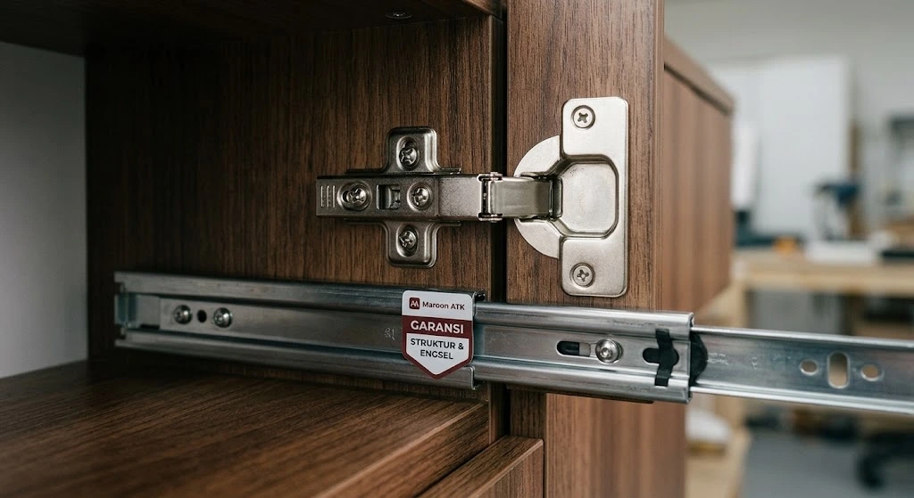

Layanan custom furniture kantor adalah jasa pembuatan perabot kerja sesuai spesifikasi teknis, dimensi ukuran ruangan, dan konsep desain yang diminta klien, dilengkapi jaminan garansi struktur rangka dan hardware engsel untuk mengatasi kekhawatiran umum seperti laci macet, pintu kabinet anjlok, atau lapisan edging yang mudah mengelupas dalam pemakaian harian.
Banyak pengelola kantor dan tim General Affairs (GA) pernah mengalami pengalaman mengecewakan saat memesan furniture kantor custom dari workshop tukang lepas. Di awal penawaran, visual desain terlihat menawan dan harganya tampak murah. Namun baru berselang tiga hingga enam bulan pascainstalasi, pintu lemari mulai miring, rel laci tersangkut saat ditarik, dan tepi laminasi meja mulai mengelupas.
Ketika masalah tersebut muncul, vendor pihak ketiga kerap menghindar, sulit dihubungi, atau meminta biaya servis tambahan yang mahal. Memilih penyedia custom furniture kantor profesional berbadan hukum resmi dengan garansi struktur dan engsel yang tertulis hitam di atas putih adalah keputusan strategis untuk melindungi aset operasional perusahaan Anda.
Apa Itu Layanan Custom Furniture Kantor?
Layanan custom furniture kantor adalah solusi manufaktur interior kerja di mana setiap unit meja kerja, partisi workstation, credenza direksi, meja resepsionis, dan lemari arsip built-in dibuat secara khusus (made-to-order) berdasarkan denah tata letak, fungsi divisi, serta palet warna identitas korporat (corporate branding).
Layanan ini sangat berbeda dari furniture jadi (loose furniture) yang diproduksi massal di toko dengan dimensi dan model standar. Perusahaan memilih opsi custom terutama ketika menghadapi tantangan arsitektur khusus: pilar gedung yang menonjol di tengah area kerja staf, sudut ruangan yang tidak siku (irregular shape), atau kebutuhan jalur manajemen kabel (cable tray & grommet) tersembunyi yang terintegrasi langsung ke dalam bodi meja.
Apa Saja Masalah Umum pada Furniture Custom Kualitas Rendah?
Masalah umum yang sering dikeluhkan pada furniture custom kualitas rendah bersumber dari penggunaan bahan baku murah demi menekan harga penawaran awal. Tiga titik kegagalan yang paling sering terjadi adalah:
1. Laci yang Macet atau Sulit Ditarik
Laci yang macet umumnya disebabkan oleh penggunaan rel laci roda plastik (single extension track) berkualitas rendah yang tidak sanggup menahan beban tumpukan berkas dokumen. Pemasangan rel yang tidak presisi secara milimeter juga menyebabkan laci miring dan tersangkut setelah beberapa bulan pemakaian intensif.
2. Engsel Pintu Kabinet yang Mudah Patah dan Kendur
Engsel sendok tipis tanpa mekanisme peredam (soft-closing) rentan mengalami keausan drastis akibat benturan pintu yang dibanting saat ditutup. Beban daun pintu lemari arsip yang berat menyebabkan sekrup engsel terlepas dari dinding partisi, membuat pintu kabinet menggantung miring atau bahkan copot seutuhnya.
3. Lem dan Finishing HPL yang Cepat Terkelupas
Penggunaan lem kuning manual dengan daya rekat rendah serta proses penempelan edging tanpa mesin hot-melt otomatis menyebabkan lapisan High Pressure Laminate (HPL) mudah terkelupas di area sudut meja yang sering tergesek lengan atau tumpahan air minum.

Tabel Komparasi Hardware & Material: Standar MAROON ATK vs Vendor Murahan
Agar proses pengadaan furniture instansi Anda tidak terjebak penawaran murah berkualitas semu, cermati perbedaan spesifikasi teknis komponen berikut:
| Bagian Komponen | Standar Spesifikasi MAROON ATK | Vendor Konvensional / Murahan |
|---|---|---|
| Bahan Papan Utama | Multipleks Plywood Meranti Grade A 18mm padat anti-lentur | Particle board serbuk kayu / MDF daur ulang mudah hancur kena lembab |
| Lapisan Finishing | HPL tebal 0.8mm tahan gores & panas + Edging PVC 2mm mesin otomatis | Decosheet / paper sheet tipis mudah robek & pinggiran tajam |
| Engsel Kabinet | Concealed soft-close hydraulic hinge (uji siklus 50.000 kali buka-tutup) | Engsel sendok besi tipis biasa, berisik dan mudah berkarat |
| Rel Laci (Drawer Slide) | Double-extension full extension ball bearing slide (daya tahan 40 kg) | Rel roda plastik single track mudah copot dan mentok |
| Rangka Kaki Meja | Baja hollow galvanis finishing powder coating anti-karat | Besi tipis cat semprot manual mudah mengelupas dan goyang |
| Jaminan Garansi | Garansi tertulis struktur dan fitting mekanikal hingga 2 tahun penuh | Tanpa garansi atau garansi lisan yang lepas tanggung jawab |
Bagaimana Garansi Struktur dan Engsel Bekerja pada Furniture Custom?
Garansi struktur dan engsel memberikan jaminan perbaikan cuma-cuma atau penggantian komponen suku cadang apabila terjadi kerusakan pada integritas rangka utama, rel laci, engsel kabinet, maupun kaki meja dalam periode garansi yang ditentukan setelah Berita Acara Serah Terima (BAST) ditandatangani.
Garansi ini mencakup perlindungan terhadap:
- Defleksi / Melengkungnya Daun Meja: Penggantian modul meja jika terjadi penurunan kelurusan permukaan akibat cacat struktural material internal.
- Kerusakan Mekanikal Engsel: Penggantian hidrolik engsel soft-close yang macet atau kehilangan daya redam.
- Kerusakan Rel Laci: Servis atau penggantian bearing rel laci yang menghambat pergerakan halus laci berkas.
- Dukungan Teknisi Respons Cepat: Kunjungan tim servis onsite di wilayah Jabodetabek, Surabaya, Malang, Denpasar, dan Makassar dalam waktu 1x24 jam kerja sejak laporan diterima.
Apa Saja Tahapan Proses Pemesanan Custom Furniture Kantor?
Untuk memastikan hasil akhir yang presisi dan tepat waktu, MAROON ATK menerapkan alur kerja terstandarisasi:
- Konsultasi Kebutuhan & Survei Lokasi Gratis: Tim desainer interior kami melakukan pengukuran detail dimensi ruangan, mendata titik colokan listrik dinding, dan menganalisis sirkulasi lalu lintas staf.
- Visualisasi Desain 3D & Layout Plan: Penyusunan gambar kerja 3D render fotorealistik dan denah modular agar manajemen dapat melihat hasil akhir ruangan sebelum proses produksi dimulai.
- Penerbitan SPH Resmi & Mockup Material: Pengajuan Surat Penawaran Harga terperinci yang mencantumkan spesifikasi hardware serta penyerahan sampel fisik laminasi HPL untuk approval.
- Fabrikasi Presisi di Workshop: Pemotongan papan menggunakan mesin panel saw komputerisasi dan penempelan edging bertekanan tinggi untuk hasil sudut yang mulus dan awet.
- Pengiriman, Perakitan di Lokasi, & BAST: Pemasangan rapi oleh tim teknisi berpengalaman di luar jam kerja kantor agar tidak mengganggu operasional staf, diakhiri dengan uji fungsi menyeluruh dan penyerahan sertifikat garansi resmi.
Mengapa Memilih Maroon ATK untuk Custom Furniture Kantor Anda?
MAROON ATK berpengalaman menyuplai kebutuhan furniture kantor ke lebih dari 150 instansi pemerintah dan perusahaan swasta di Jabodetabek dengan keakuratan pengiriman barang mencapai 99,8 persen (data internal Maroon ATK, 2026), didukung tim produksi workshop terpadu yang memahami standar ketat mutu interior korporat modern.
Keunggulan utama memilih MAROON ATK sebagai mitra pengadaan B2B Anda:
- Legalitas Usaha Lengkap: Berbadan hukum PT resmi, terdaftar di sistem pengadaan e-Katalog, serta tertib menerbitkan Faktur Pajak e-Faktur PPN 11% untuk kelancaran audit akuntansi perusahaan.
- Satu Pintu Pengadaan (One-Stop Procurement): Anda dapat mengonsolidasikan pesanan custom furniture meja bersama kebutuhan kursi kantor ergonomis, lemari arsip baja, perlengkapan alat tulis kantor, hingga layar panggung videotron LED dalam satu kontrak kerja.
- Dukungan 5 Kota Besar: Jaringan layanan purnajual langsung di Jakarta, Surabaya, Malang, Denpasar, dan Makassar dengan jaminan ketersediaan suku cadang ready-stock.
Pelajari juga pertimbangan efisiensi biaya dan konsep keberlanjutan melalui panduan tren material custom furniture kantor ramah lingkungan serta metode menyusun anggaran pengadaan furniture custom.
Kesimpulan dan Langkah Memulai Pesanan Furniture Custom Bergaransi
Investasi furniture kantor custom bukan sekadar tentang estetika ruang kerja yang modern, melainkan tentang daya tahan perabot yang mampu menopang aktivitas harian staf selama bertahun-tahun tanpa menimbulkan biaya perawatan berulang:
- Pilihlah material dasar plywood berkualitas tinggi dan hindari serbuk kayu MDF untuk furniture kerja harian.
- Pastikan hardware engsel dan rel laci dilengkapi fitur soft-closing dengan merek bersertifikasi internasional.
- Wajibkan adanya jaminan garansi tertulis atas struktur dan fitting engsel dalam Surat Perjanjian Kerja (SPK).
- Manfaatkan survei layout dan konsultasi desain gratis dari penyedia berpengalaman sebelum menetapkan anggaran.
Jadwalkan Survei & Desain Custom Furniture Gratis
Diskusikan denah ruang kantor Anda bersama arsitek interior MAROON ATK untuk mendapatkan visualisasi 3D dan simulasi penawaran harga bergaransi resmi.
Pertanyaan yang Sering Diajukan
Layanan custom furniture kantor adalah jasa pembuatan furniture sesuai spesifikasi, ukuran, dan desain yang diminta klien, berbeda dari furniture jadi dengan ukuran dan model standar.
Masalah umum meliputi laci yang macet atau sulit ditarik, engsel pintu kabinet yang mudah patah, serta lem dan finishing yang cepat terkelupas dalam waktu singkat.
Garansi struktur dan engsel memberikan jaminan perbaikan atau penggantian komponen tertentu apabila terjadi kerusakan pada rangka, laci, atau engsel dalam periode yang ditentukan setelah serah terima.
Tahapan umumnya meliputi konsultasi kebutuhan dan ukuran, penyusunan desain, proses produksi, hingga pengiriman dan pemasangan di lokasi klien.
Maroon ATK menyediakan layanan custom furniture dengan jaminan garansi struktur dan engsel, didukung pengalaman melayani ratusan instansi di wilayah Jabodetabek.

Ridhan Fahri
Praktisi pengadaan B2B dan manajemen fasilitas kantor yang berfokus pada standarisasi perabot kerja korporat, efisiensi tata ruang modular, dan keandalan hardware furniture bergaransi di Indonesia.